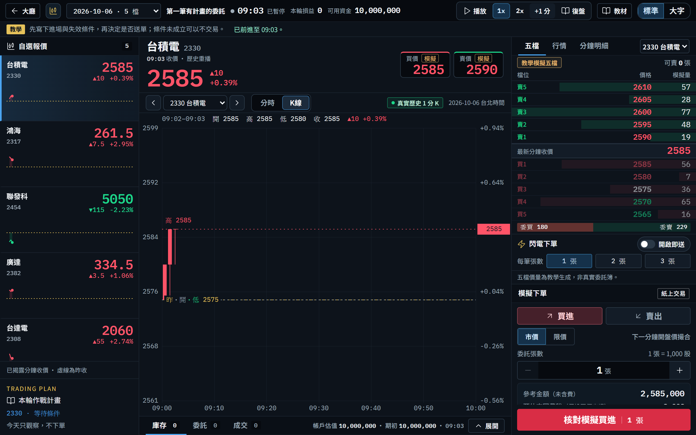

從第一個報價，到第一場完整的模擬當沖。每一關的節奏都一樣：看懂目標 → 照圖操作 → 立即驗證 → 完成挑戰 → 解鎖下一關。點下方的關卡開始，或用「下一頁」依序閱讀。
勾選會存在哪裡？
你在這個數位版勾選的項目與寫下的想法，只存在這台裝置的這個瀏覽器（localStorage）。換手機或電腦、使用無痕視窗、清除瀏覽器資料，紀錄就會消失；也不會傳給講師或教室系統。正式的學習紀錄請以紙本講義、講師簽名與教室系統的復盤為準。
這是模擬交易教學
所有委託都是紙上模擬，不會送到券商，也不會動用真實資金。富邦 API 仍在串接準備中，教室目前不能送出真實委託。
資料從哪裡來
回放使用 Yahoo Finance 歷史 1 分鐘 K 線（2026/10/05、10/06，各 5 檔，09:00–10:30），每分鐘結束後才揭露整根 K 棒。教學五檔、委買委賣是教學生成的模擬資料，不是真實委託簿。手續費與交易稅為教材固定估算。
市場有風險
真實市場有滑價、排隊、流動性與斷線等風險；當沖可能在很短時間內造成虧損。模擬結果不代表實際報酬，本手冊也不是投資建議，不承諾任何獲利。
只用當下看得到的資料
教材只有兩個交易日，重練同一天時你可能記得後面的走勢。練習時請只根據畫面上已經揭露的 K 線做決定，並在復盤中誠實記錄。
成就是學習標記
講義裡的成就章是你的學習紀錄，由你勾選、講師簽名，不是系統的雲端徽章，也不代表能力認證。
LEVEL 01
我的第一個交易工作台
Your first trading desk
成就目標我能自己找到一檔股票並說出最新價格。
第一次上場，先把教室與交易畫面認熟。這一關不下單，只做一件事：『找到』——找到教室入口、找到你的工作台、找到股票、找到最新報價。
系統課程第 1 課 · 第一筆有計畫的委託練習回合第 1 輪（本關開始，下一關收尾）交易日2026/10/06（系統預設）計畫範本先看不做：只觀察、不下單你需要入場碼、電子信箱、10 字元以上的新密碼
完成本關解鎖
First Quote Achievement 第一個報價
- 01-1進入交易教室
- 01-2建立你的學員帳號
- 01-3開始第一輪：只看不做
- 01-4認識交易工作台
- 01-5用自選報價切換股票
- 01-6讀出最新報價 ★
這一關要完成
用講師提供的入場碼進入教室，看到大廳的今天三件事。
為什麼要學
教室只開放給上課的學員；入場時也要先確認你了解這是模擬教學，不是真實交易。
操作前準備
- 講師給的教室網址與入場碼
- 連上網路的電腦、平板或手機
提示 入場頁上方的先體驗模擬操作是不用帳號的三分鐘範例，見紙本講義的課前暖身。
逐步操作
- 1
在
教室入場碼輸入講師給你的入場碼。
輸入時會顯示成圓點；按右邊的眼睛圖示可以檢查有沒有打錯。
- 2
讀完練習前，請先了解，勾選下方的同意聲明。
- 3
按
進入教室。
沒有勾選聲明時，按鈕是淡藍色、按不下去。
預期看到
畫面換成教室大廳，最上方出現今天的一題與今天三件事。
遇到問題
出現密碼錯誤
入場碼要和講師提供的一模一樣，注意大小寫與空白，重新輸入一次。
出現嘗試太多次，稍後再試
連續輸錯會暫停約 10 分鐘，請先向講師確認入場碼。
出現教室入口暫時連不上，再試一次。
檢查網路後再按一次；仍失敗請告訴講師。
想一想
為什麼進入教室前，要先勾選『這是教學模擬、不是投資建議』的聲明？
NEXT建立你自己的學員帳號，讓練習紀錄跟著你走。
這一關要完成
建立個人學員帳號、完成班級資料，之後每一輪練習都存在教室主機。
為什麼要學
用帳號練習，計畫、委託與復盤會存在教室主機，換裝置也能登入接著練。填寫班級代碼後，你會出現在講師的本班名單。
操作前準備
- 一個常用的電子信箱
- 一組至少 10 個字元的新密碼（不要用入場碼）
- 班級代碼（講師沒給就留空）
第 1 步 · 個人學習帳號
圖 01-2b建立學員帳號。系統實際畫面
第 2 步 · 完成班級資料
圖 01-2c確認名稱、班級代碼與教學聲明。系統實際畫面
逐步操作
- 1
在大廳往下捲，找到讓每次練習都有紀錄卡片，按登入／建立帳號。
- 2
按
首次註冊切換到建立帳號。
已經有帳號的人按登入帳號，輸入信箱與密碼即可。
- 3
填寫
學員名稱電子信箱帳號密碼。
學員名稱是講師與同學看見的名字；密碼至少 10 個字元，和入場碼不同。
- 4
按建立帳號，繼續下一步。
- 5
第 2 步確認學員名稱，填入講師給的班級代碼；沒有就留空。
- 6
讀完教學聲明後勾選。
- 7
按儲存資料，進入教室。
預期看到
回到大廳，右上角出現我的學習；今天的一題顯示題目日期與連續 0 天。
圖 01-2-結果登入後的大廳：右上角多了我的學習。系統實際畫面
遇到問題
系統說這個信箱已經註冊過
改按登入帳號，用同一組信箱與密碼登入。
儲存資料，進入教室按不下去
還沒勾選教學聲明。勾選後再按。
忘記密碼
畫面上沒有自助重設密碼的功能，請聯絡講師協助。
講師說今天先用訪客
可以先不註冊；畫面上方會提示目前是訪客。之後建立帳號時，這台瀏覽器的訪客練習會搬進帳號（若帳號在同一天已有練習，訪客那一輪不會保存）。
想一想
入場碼和帳號密碼有什麼不同？為什麼兩個都需要？
NEXT選擇第 1 課，寫下第一份作戰計畫，開始第一輪練習。
TASK 01·3約 7 分鐘
開始第一輪：只看不做
這一關要完成
從第 1 課開始第一輪練習，用先看不做範本寫好計畫，讓回放走到 09:01。
為什麼要學
每一輪練習都從『先寫計畫』開始。第一輪只觀察、不下單，把注意力全部放在認識畫面——這也符合第 1 課『條件未成立可以不交易』的原則。
操作前準備
- 已登入帳號，停在大廳
- 這一輪的交易日：2026/10/06
大廳 · 六個真實回放練習
圖 01-3a第 1 課卡片。系統實際畫面
作戰計畫
圖 01-3b選先看不做，再按用這個計畫開始。系統實際畫面 · 交易日 2026/10/06 · 回放 09:00
A–C A 理由、B 操作條件、C 失效條件。範本把操作條件寫成今天只觀察，不下單，關注的股票預設是台積電。開始後這份計畫就固定下來，新的想法要寫在復盤裡。
交易日
這一輪回放哪一天的歷史行情；目前有 2026/10/05、10/06。
回放
把歷史行情一分鐘一分鐘重播，只看得到已經走完的分鐘。
作戰計畫
開始前寫下的理由、進場與失效條件，開始後不能改。
逐步操作
- 1
在大廳往下找到六個真實回放練習。第 1 課的標題是第一筆有計畫的委託，可以先按查看練習步驟讀一遍。
- 2
按第 1 課卡片最下方的開始這個練習。
- 3
確認左上角交易日是2026-10-06 · 5 檔，旁邊的課名是第一筆有計畫的委託。
- 4
在
寫下今天的作戰藍圖選
先看不做。
系統預設選突破前高，請改選先看不做。
- 5
（選做）按看／改計畫內容，看看範本填好的三格：理由、操作條件、失效條件。
- 6
按用這個計畫開始。約 1 秒後，第一根 K 棒出現，時鐘變成 09:01。
預期看到
出現走勢圖與五檔；時鐘顯示09:01 已暫停；左下角本輪作戰計畫寫著今天只觀察，不下單。第一次開始時會跳出新手教學（下一個任務會用到）。
遇到問題
看到的是上一輪的完成畫面
按寫新計畫，再練一輪，就會打開新的作戰計畫。
時鐘一直停在 09:00
按上方+1 分揭露第一分鐘。
交易日不是 2026-10-06
開始前用左上角的交易日選單改回 2026-10-06。
出現已恢復這個交易日尚未完成的練習
這一天還有沒保存的練習。先在那一輪寫復盤、保存，再開始新的一輪。
想一想
為什麼『這一輪不下單』也可以是一份完整的計畫？
NEXT跟著新手教學，認識交易工作台的每一個區塊。
這一關要完成
完成新手教學三步，並說出交易工作台十個區塊的名稱與用途。
為什麼要學
下單前要先知道資訊放在哪裡：價格、時間、資金與紀錄各在不同區塊。找錯地方，就會看錯數字。

12345678910AB- 1狀態列 回大廳、交易日、課名、時鐘、本輪損益、可用資金。
- 2重播控制 播放1x／2x+1 分與復盤。
- 3教學提示列 本課原則、操作回饋，以及最新一則快訊。
- 4自選報價 5 檔教材股票的最新價、漲跌與小走勢。
- 5報價區 目前股票的名稱、最新價、漲跌與模擬買價／賣價。
- 6圖表工具列 切換股票，切換分時與K線。
- 7走勢圖 只畫出已經走完的分鐘；虛線昨是昨收。
- 8五檔／行情／分鐘明細 教學模擬五檔、今日開高低與最近 10 分鐘。
- 9模擬下單 選買賣、價格類型、張數，核對後送出。
- 10交易紀錄 庫存委託成交三個分頁，可展開。
- A本輪作戰計畫：開始前寫的計畫摘要。
- B教材：背景資料、本輪計畫與資料來源。
手機與大字模式一次顯示一個區塊，用底部自選行情下單庫存四個分頁切換，內容和桌機相同。
逐步操作
- 1
新手教學出現第 1／3 步 看走勢圖：讀完說明，按下一步。
- 2
第 2／3 步 讓行情動起來：記住播放與買進的位置，按下一步。
- 3
第 3／3 步 成交與庫存：記住交易紀錄在下方，按完成。
- 4
對照工作台地圖，用手指著螢幕，依序說出 1–10 區的名稱。
- 5
按兩次+1 分，讓時鐘走到 09:03，看看哪些數字跟著改變。
預期看到
新手教學關閉、時鐘 09:03，行情數字都更新了；本輪損益 0可用資金 10,000,000沒變，因為你沒有下單。
遇到問題
不小心按了跳過
回大廳按第一次使用？看新手教學，可以再看一次。
按+1 分沒有反應
每前進一分鐘要間隔約 1 秒，稍等再按。
字太小，或用手機上課
按右上角大字放大文字與按鈕；手機與大字模式用底部自選行情下單庫存四個分頁切換。
NEXT在自選報價裡切換股票。
這一關要完成
用三種方法切換股票，確認報價區與走勢圖跟著換。
為什麼要學
同一個交易日有 5 檔教材股票，它們共用同一個時鐘。切換股票不會讓時間前進，可以放心比較。
逐步操作
- 1
在左邊自選報價點鴻海。
- 2
看報價區：名稱換成鴻海 2317，走勢圖也一起換了。
- 3
按圖表工具列的›（下一檔股票），換到聯發科。
- 4
打開股票選單，選2330 台積電換回來。
預期看到
每換一次，名稱、最新價與走勢圖都跟著換，時鐘仍然是 09:03。
遇到問題
自選報價寫著尚未揭露
還在 09:00，先按+1 分。
手機上找不到自選報價
按底部自選分頁；點一檔股票後會自動回到行情。
下單區的股票也跟著換了
對，下單區永遠對應你目前選的股票。下單前一定要再確認股票名稱。
想一想
為什麼切換股票不會讓時間前進？這對練習有什麼好處？
NEXT讀出你的第一個報價。
這一關要完成
正確讀出一檔股票的最新價、漲跌、漲跌幅與時間，填進講義。
為什麼要學
所有判斷都從『現在價格是多少』開始。讀錯一個數字，後面的計畫都會跟著錯。
圖 01-6b自選報價也顯示每一檔的最新價與漲跌。系統實際畫面 · 交易日 2026/10/06 · 回放 09:03
最新價
最新一根完整分鐘 K 棒的收盤價。09:03 收價是 09:02–09:03 這一分鐘的收盤。
昨收
前一個交易日的收盤價。台積電 10/06 的昨收是 2575。
漲跌／漲跌幅
最新價減昨收的金額，以及它占昨收的百分比。紅 ▲ 代表比昨收高。
逐步操作
- 1
看報價區左上：股票名稱台積電與代號 2330。
- 2
看名稱下方的時間：09:03 收價 · 歷史重播。這個價格是 09:02–09:03 這一分鐘的收盤價。
- 3
讀大字的最新價：2585。
- 4
讀旁邊的漲跌與漲跌幅：▲10、+0.39%。紅色 ▲ 代表比昨收高。
- 5
把四個數字填進下方的『我的第一個報價』。
- 6
換到另一檔股票（例如廣達），再讀一次、填第二列。
我的第一個報價
請寫在紙本講義上；數位版只顯示表格格式，藍底列是範例。
| 股票 | 時間 | 最新價 | 漲跌 | 漲跌幅 |
|---|
| 台積電 2330 | 09:03 | 2585 | ▲10 | +0.39% |
| | | | | |
| | | | | |
預期看到
你填的數字和畫面一致。台積電在 09:03 的最新價 2585，比昨收 2575 高 10 元（+0.39%）。
遇到問題
圖表上方的數字和報價區不同
報價區是『最新一分鐘』的收盤價；圖表上方的讀數列，顯示你指到的那一分鐘。
數字一直在變
你可能按了播放。按暫停後再讀。
分不清紅綠
台股慣例是『紅漲綠跌』，和部分國外網站相反。
想一想
報價區右邊的買價賣價為什麼標著模擬？猜猜看，下一關揭曉。
NEXTLEVEL 01 完成！下一關：第一次看懂行情。
LEVEL 02
第一次看懂行情
Reading the market
成就目標我能獨立閱讀一檔股票的基本行情。
上一關你找到了『現在的價格』。這一關要讀懂價格背後的故事：它比昨天高還是低？今天走過多大的範圍？每一分鐘怎麼走？買賣雙方的價格在哪裡？最後用一句話保存第一輪的復盤。
系統課程第 1 課 · 第一筆有計畫的委託練習回合第 1 輪（繼續，本關最後保存）交易日2026/10/06回放時間09:03 → 09:10 左右本關操作只看、不下單
完成本關解鎖
Market Reading Achievement 看懂行情
- 02-1漲跌與昨收：紅漲綠跌
- 02-2開盤、最高、最低：今天走過的範圍
- 02-3分時與 K 線
- 02-4買一、賣一與五檔
- 02-5分鐘明細與成交量
- 02-6保存第一輪復盤 ★
TASK 02·1約 6 分鐘
漲跌與昨收：紅漲綠跌
這一關要完成
分辨每一檔股票現在是漲、跌還是平盤，並說出比較的基準。
為什麼要學
漲跌不是和開盤比，而是和昨收比。看懂基準，才知道價格現在在哪裡。
紅漲綠跌
台股慣例：比昨收高是紅 ▲，比昨收低是綠 ▼，和部分國外網站相反。
逐步操作
- 1
按兩次+1 分，讓時鐘走到 09:05。
- 2
看自選報價：鴻海是紅色 ▲8、+3.15%。
- 3
聯發科是綠色 ▼125、-2.42%。
- 4
點鴻海，看報價區的漲跌與漲跌幅，和自選報價的數字一致。
- 5
看走勢圖上標昨的黃色虛線：線的上方是漲，下方是跌。
- 6
把 5 檔股票在 09:05 的狀態填進下方表格。
09:05 的五檔股票
請寫在紙本講義上；數位版只顯示表格格式，藍底列是範例。
| 股票 | 最新價 | 漲／跌／平 | 漲跌幅 |
|---|
| 鴻海 2317 | 262 | 漲（紅 ▲） | +3.15% |
| | | | |
| | | | |
| | | | |
| | | | |
預期看到
台積電、鴻海、廣達、台達電是紅色（比昨收高），聯發科是綠色（比昨收低）。自選報價下方寫著已揭露分鐘收價 · 虛線為昨收。
遇到問題
數字是白色、沒有箭頭
價格等於昨收（平盤），漲跌顯示 0。
表格填到一半時間變了
你可能按了播放。按暫停，或在填完前不要再按+1 分。
想一想
鴻海在 09:05 是紅色（漲），但它的小走勢一路往下。『漲』和『正在下跌』可以同時成立嗎？為什麼？
NEXT看懂今天走過的範圍：開盤、最高、最低。
TASK 02·2約 5 分鐘
開盤、最高、最低：今天走過的範圍
這一關要完成
在行情分頁讀出開盤、昨收、最高、最低，並看懂區間位置條。
為什麼要學
最高與最低告訴你今天到目前為止價格走過多大的範圍——之後寫停損、算風險，都會用到這個範圍。
逐步操作
- 1
在右側點行情分頁。
- 2
讀開盤昨收最高最低四個數字。
- 3
看下方的區間條：圓點越靠右，代表現價越接近今天到目前的最高價。
- 4
對照走勢圖：圖上也標了開高低昨的價位；數字相同時會合併成昨・開・低。
預期看到
台積電在 09:05：開盤 2575、昨收 2575、最高 2590、最低 2575。
遇到問題
最高價在 09:04 之後還會變嗎？
會。這是『到目前為止』的最高與最低，之後的 K 線可能刷新。
找不到行情分頁
在右側五檔旁邊；手機請先點底部下單分頁。
想一想
為什麼『到目前為止』的最高價，不能保證就是今天的最高價？
NEXT看懂兩種走勢圖：分時與 K 線。
這一關要完成
切換分時與 K 線，讀出一根 K 棒的開、高、低、收，認出前高。
為什麼要學
分時看方向與位置，K 線看每一分鐘的開高低收。兩種圖回答不同的問題，熟練切換才不會漏看。
分時
圖 02-3a分時：把每分鐘收盤價連成一條線。系統實際畫面 · 交易日 2026/10/06 · 回放 09:07
K 線
圖 02-3bK 線：一根代表一分鐘；09:07 確認的前高 2590 畫成虛線。系統實際畫面 · 交易日 2026/10/06 · 回放 09:07
圖 02-3c指到一根 K 棒，圖上方的讀數列顯示那一分鐘的開、高、低、收。系統實際畫面 · 交易日 2026/10/06 · 回放 09:07
游標停在 09:06–09:07 這一根：讀數列寫著開 2585、高 2585、低 2580、收 2580。收盤低於開盤，所以是一根綠 K。
K 棒
一分鐘的開、高、低、收。收盤 ≥ 開盤為紅 K，收盤 < 開盤為綠 K。
前高
先前出現、後來被系統確認的高點，圖上畫虛線並標前高。
江波圖
依逐筆成交描出的走勢。本教室的分時只連接分鐘收價，不是逐筆江波圖。
逐步操作
- 1
在圖表工具列按分時：圖上只有一條線，連接每分鐘的收盤價。
- 2
按K線：每一根 K 棒代表一分鐘，紅 K 收盤 ≥ 開盤、綠 K 收盤 < 開盤。
- 3
把滑鼠移到一根 K 棒上（手機用手指點），圖上方的讀數列會顯示那一分鐘的開、高、低、收。
- 4
按+1 分到 09:07：快訊列出現台積電 前高確認 2590，圖上多了一條標前高的虛線。
預期看到
你能用 K 線讀出任一分鐘的開高低收，也能在圖上找到昨與前高兩條虛線。
遇到問題
快訊一下子就不見了
快訊列只顯示最新一則：09:08 會換成台達電的前高確認。錯過了就看圖上的虛線與標籤。
讀數列的數字和報價區不一樣
讀數列顯示你指到的那一分鐘；報價區永遠是最新一分鐘。
看不到成交量柱
本教材的分鐘量還沒完成核對，所以不顯示量柱與均價線（下一個任務會說明）。
想一想
台積電 09:04 那根 K 棒創下 2590，但前高確認到 09:07 才出現。為什麼要等幾分鐘才能『確認』一個高點？
NEXT五檔與買一、賣一。
這一關要完成
在五檔找到買一、賣一，說出它們和最新價的關係，並知道這裡的五檔是教學模擬。
為什麼要學
真實市場的五檔，顯示『排隊等著成交』的買價與賣價。看懂它，才知道想立刻買或賣時，大約是什麼價格。
五檔（教學模擬）
圖 02-4a09:07 的教學模擬五檔。系統實際畫面 · 交易日 2026/10/06 · 回放 09:07
報價區的買價／賣價
圖 02-4b報價區右上的買價賣價就是買一、賣一。系統實際畫面 · 交易日 2026/10/06 · 回放 09:07
五檔
最接近成交價的五個買價、五個賣價與數量。這裡是教學模擬，不是真實委託簿。
買一／賣一
買方最高的價格／賣方最低的價格。想立刻買，通常要付賣一；想立刻賣，通常拿到買一。
委買／委賣
五檔買方、賣方數量的加總。這裡是模擬量，不是成交量。
逐步操作
- 1
在右側點五檔分頁，左上角標著教學模擬五檔。
- 2
上半部是賣方：最靠近中間的是賣1（最低的賣價）。
- 3
中間一列是最新分鐘收價。
- 4
下半部是買方：最靠近中間的是買1（最高的買價）。
- 5
底部委買／委賣長條：五檔模擬量的加總，不是真實成交量。
- 6
對照報價區右上的買價賣價——它們就是買1、賣1。
預期看到
09:07：最新分鐘收價 2580、買1 2580、賣1 2585——賣1 比買1 高一檔（台積電一檔是 5 元）。
注意
本關只閱讀，先不要點五檔裡的價格：點價格會開始建立委託。閃電下單的開啟即送打開後，點一下就直接送出委託，新手請保持關閉。
遇到問題
五檔是空白的
還在 09:00、尚未揭露第一分鐘；或價格已到漲跌停範圍外。
五檔的數量一直跳
模擬量會隨每一分鐘重新產生，不代表真實的買賣力道。
想一想
如果你現在想『立刻買到』台積電，大約要付買1 還是賣1 的價格？為什麼？
NEXT分鐘明細，以及為什麼這裡看不到成交量。
這一關要完成
用分鐘明細逐分鐘讀開高低收，並知道本教材為什麼不顯示成交量。
為什麼要學
看盤時，成交量（每分鐘成交多少張）和價格一樣重要。知道資料的限制，才不會用不存在的數字做判斷。
逐步操作
- 1
在右側點分鐘明細。
- 2
最上面一列是最新完成的一分鐘，往下越舊；最多顯示最近 10 分鐘。
- 3
對照 K 線：每一列就是一根 K 棒的開、高、低、收。
- 4
按教材→報價彙總與 K 棒明細，可以看到全部已揭露的分鐘與資料說明。
預期看到
你能用分鐘明細說出『哪一分鐘最高價最高』，並知道畫面上沒有成交量。
注意
關於成交量：本教材的分鐘量還沒完成核對，所以工作台不顯示量柱、均價線或量能訊號；五檔的模擬量也不是成交量。等教材補上已核對的量，畫面才會出現。
遇到問題
分鐘明細是空的
還沒揭露任何分鐘；先按+1 分。
時間看起來差一分鐘
表格的時間是『分鐘起點』：09:06 那一列，是 09:06–09:07 這一分鐘。
想一想
少了成交量，判斷『這次突破是真的有力』時，要更小心哪一件事？
NEXT用一句話保存第一輪的復盤。
這一關要完成
寫下 1–3 句觀察，保存復盤，完成第 1 輪。
為什麼要學
每一輪都要用復盤收尾。保存後，這一輪的計畫、時間與觀察都留在教室主機，之後可以回看。
復盤表單
圖 02-6a按復盤後出現的表單。系統實際畫面 · 交易日 2026/10/06 · 回放 09:10
逐步操作
- 1
在狀態列按復盤。
- 2
讀表單上方的摘要：結束時間、剩餘庫存 0 檔、待處理委託 0 筆。
- 3
讀第 1 課的復盤想一想兩個問題。
- 4
在輸入框寫 1–3 句你的觀察（例如：台積電開在昨收附近，09:07 出現前高 2590；我會讀最新價、漲跌與五檔了）。
- 5
按保存復盤，完成這一輪。
預期看到
出現完成卡已保存 · 這是操作足跡，不是獲利能力評分，列出寫下自己的計畫先觀察，再決定是否操作完成這一輪復盤三項。
遇到問題
出現請先寫下一句自己的觀察，再保存復盤。
輸入框不能空白，寫一句再保存。
不小心按了回看行情，保持暫停
回到行情畫面而已，再按一次復盤即可。
保存前想再看幾分鐘
可以。系統不會因為你停下來而前進；看完再按復盤。
想一想
完成卡寫著『這是操作足跡，不是獲利能力評分』。你覺得系統為什麼要特別強調這句話？
NEXTLEVEL 02 完成！下一關：寫下第二輪計畫，送出你的第一筆模擬委託。
LEVEL 03
我的第一筆模擬委託
Your first paper order
成就目標我成功送出人生第一筆模擬交易委託。
這一關開始第 2 輪：先寫一份有進場條件的計畫，耐心等條件出現，再用下單票送出第一筆紙上委託。你會發現，『送出委託』和『買到股票』是兩件不同的事。本關的畫面就是你等一下會看到的畫面——這裡練的是操作，不是猜走勢。
系統課程第 1 課 · 第一筆有計畫的委託（再練一輪）練習回合第 2 輪（本關開始，下一關收尾）交易日2026/10/06計畫範本回測平盤 · 關注 2330 台積電本關操作送出 1 張市價買進委託
完成本關解鎖
First Order Achievement 第一筆委託
- 03-1寫下第二輪計畫：回測平盤
- 03-2等條件成立
- 03-3認識下單票
- 03-4核對並送出委託 ★
- 03-5委託成功 ≠ 成交
TASK 03·1約 6 分鐘
寫下第二輪計畫：回測平盤
這一關要完成
用回測平盤範本開始第 2 輪，並把『附近』寫成能核對的數字。
為什麼要學
第 1 課的原則是『先寫下進場與失效條件，再決定是否送單』。條件寫得越具體，盤中越不會臨時改主意。
A·B A 是進場條件，B 是失效條件。兩個條件都在送單之前寫好；開始後不能修改。
逐步操作
- 1
在第 1 輪的完成卡按寫新計畫，再練一輪。
- 2
選回測平盤（回到昨收附近守住再買）。
- 3
按看／改計畫內容核對：關注2330 台積電、方向觀察偏多條件。
- 4
讀範本的兩個條件：操作條件『回到昨收附近、沒有跌破再買』，失效條件『跌破昨收就賣出』。
- 5
在下方『我的具體規則』寫下你的定義（建議如範例）。
- 6
按用這個計畫開始，時鐘回到 09:01。
我的具體規則
請寫在紙本講義上；數位版只顯示表格格式，藍底列是範例。
| 項目 | 我的定義 |
|---|
| 『附近』是指 | 最新價和昨收 2575 相差不超過 1 檔（5 元） |
| | |
| | |
| | |
預期看到
時鐘回到 09:01，左下角本輪作戰計畫顯示2330 · 偏多觀察與『回到昨收附近、沒有跌破再買』。
遇到問題
選錯範本
按用這個計畫開始之前都可以重選；開始後計畫固定，只能保存復盤後再練一輪。
關注的股票不是台積電
在先關注哪一檔選2330 台積電。改了內容後按鈕會變成保存計畫，進入 09:00 練習，功能相同。
想一想
『跌破昨收就賣出』為什麼要在買進『之前』就寫好？
NEXT耐心等條件出現。
這一關要完成
逐分鐘推進回放，在條件成立的那一分鐘停下來。
為什麼要學
等待是交易的一部分。條件還沒成立就下單，計畫就失去意義；用+1 分一步一步走，才不會錯過。
09:16 · 回到昨收
圖 03-2a收價回到 2575（昨收），但沒有跌破。系統實際畫面 · 交易日 2026/10/06 · 回放 09:16
09:20 · 確認訊號
圖 03-2b快訊出現台積電 站上昨收 2575。系統實際畫面 · 交易日 2026/10/06 · 回放 09:20
快訊
系統依已揭露資料提示的事件，例如站上昨收跌破昨收前高確認。只顯示最新一則。
站上昨收
收價從昨收或以下，回到昨收之上。系統在那一分鐘結束時發出快訊。
逐步操作
- 1
用+1 分一分鐘一分鐘前進（先不要按播放，才不會錯過）。
- 2
每前進一分鐘，看最新價和圖上的昨虛線（2575）。約 09:15–09:18，收價回到 2575、沒有跌破：條件的前半段成立。
- 3
繼續前進到 09:20：快訊列出現台積電 站上昨收 2575。確認訊號出現，停下來。
預期看到
時鐘 09:20，快訊09:20 台積電 站上昨收 2575，最新價 2580。你的條件全部成立，可以準備下單。
遇到問題
不小心超過 09:20
沒關係。09:22、09:26 等時間還會再出現站上昨收，在下一次訊號送單即可；成交價可能和講義不同，這是正常的。
快訊被別的股票蓋掉
快訊列只顯示最新一則（09:21 會換成台達電）。也可以直接看 K 棒是否收在昨收虛線之上。
想用播放比較快
可以，但 1x 每 2 秒就前進一分鐘。接近 09:15 時改用+1 分。
想一想
09:15–09:18 價格已經回到 2575，為什麼我們還要多等一個站上昨收的確認？
NEXT認識下單票：方向、價格、張數。
這一關要完成
在模擬下單設定買進、市價、1 張，並看懂三個金額欄位。
為什麼要學
下單票上的每一格都會影響結果：方向錯了就變成賣出，張數多按一下就是兩倍的風險。送單前先看懂每一格。
市價（本關使用）
圖 03-3a下單票：買進、市價、1 張。系統實際畫面 · 交易日 2026/10/06 · 回放 09:20
限價（下一關使用）
圖 03-3b按限價才會出現委託價格。系統實際畫面 · 交易日 2026/10/06 · 回放 09:20
A 限價：按限價後用−／＋一次調一檔（台積電一檔 5 元）。買進限價是『最多願意付的價格』。本關先用市價，下一關會練限價。
張／股
台股 1 張 = 1,000 股。本教室每筆 1–3 張。
市價委託
不指定價格；本教室用下一分鐘的開盤價撮合。
限價委託
指定價格：買進時開盤價不高於限價才成交，未達價就留單等待。
參考金額
最新收價 × 股數，不含費用。實際成交價可能不同。
預估來回費稅
假設用同一價格買進再賣出，手續費加交易稅的估算。
可用模擬資金
這一輪還能用的紙上資金。每一輪從 1,000 萬元開始。
逐步操作
- 1
方向選買進（預設就是買進，按鈕是紅色框）。
- 2
價格類型選市價，右邊寫著下一分鐘開盤價撮合。
- 3
張數保持1 張。旁邊提醒1 張 = 1,000 股；每筆最多 3 張。
- 4
讀參考金額（未含費）：2,580,000 = 最新收價 2580 × 1,000 股。
- 5
讀預估來回費稅（假設同價出場）：約 8,282 元。
- 6
讀可用模擬資金：10,000,000。
預期看到
下方按鈕顯示核對模擬買進 1 張，三個金額欄位都有數字。
遇到問題
參考金額顯示—
限價欄位格式不對，或還在 09:00。改回市價或修正價格。
出現請輸入符合升降單位與昨收上下 10% 範圍的價格。
限價要符合跳動單位（台積電一檔 5 元），也不能超過昨收上下 10%。
＋按不下去
已經 3 張，這是每筆上限。
下單區的股票不是台積電
在下單區上方的商品選單，或自選報價，選回台積電。
想一想
參考金額 2,580,000 元，就是你最後要付的錢嗎？還有哪些原因會讓實際金額不同？
NEXT核對金額，送出你的第一筆委託。
這一關要完成
用確認卡逐項核對委託內容，送出人生第一筆模擬委託。
為什麼要學
確認卡是送出前的最後一道關卡。專業交易員送單前一定再核一次：股票、方向、張數、價格。
確認卡
圖 03-4a按核對模擬買進後出現的確認卡。系統實際畫面 · 交易日 2026/10/06 · 回放 09:20
送出之後
圖 03-4b委託已送出 · 等待撮合。系統實際畫面 · 交易日 2026/10/06 · 回放 09:20
逐步操作
- 1
按核對模擬買進 1 張，出現確認模擬委託。
- 2
核對股票：2330 台積電；方向買進；張數1 張。
- 3
核對委託股數1,000 股、委託價格市價模擬、參考金額與預估來回費稅。
- 4
讀說明：參考金額依已揭露收盤價計算，下一分鐘開盤價撮合。送出當下尚未成交。
- 5
全部正確，按確認送出模擬買進；有錯就按返回修改。
- 6
下單區出現委託已送出 · 等待撮合：2330 台積電 · 買進 1 張 · 市價。
預期看到
你的第一筆模擬委託已送出！下方交易紀錄的委託旁出現1 待成交，提示列寫著紙上委託已記錄，尚未代表成交。
遇到問題
出現行情或帳戶已更新，請返回重新核對委託。
確認卡打開後，時間前進或帳戶變了。按返回修改再核對一次。
出現目前模擬資金不足，無法委託
張數太多。1 張台積電約 258 萬元，3 張聯發科就超過 1,000 萬元。
怕按兩次送出兩筆
同一時間只能有一筆待撮合委託，下單票會鎖住，不會重複送出。
想一想
為什麼系統要多一個『確認』步驟，而不是按一次就送出？
NEXT委託成功，但成交了嗎？
這一關要完成
在委託分頁讀出委託狀態，說清楚委託和成交的差別。
為什麼要學
很多新手以為按下送出就買到了。委託只是你的要求，要等撮合條件成立才會成交；有成交才會有庫存。
逐步操作
- 1
點下方交易紀錄的委託分頁（會自動展開）。
- 2
找到你的委託：買進 1 張、委託價市價、成交價—、狀態待撮合。
- 3
點成交分頁：顯示尚無模擬成交。點庫存：顯示目前沒有庫存。
- 4
在『委託 vs 成交』表格寫下成交、庫存兩個分頁現在的狀態。先不要前進——下一關會帶你看它成交。
委託 vs 成交
請寫在紙本講義上；數位版只顯示表格格式，藍底列是範例。
預期看到
委託已經送出，但成交與庫存都還是 0。按下送出 ≠ 已經買到。
注意
四種委託狀態：待撮合、已成交、已撤回（你取消或練習結束時取消）、未接受（資金或庫存不足）。
遇到問題
看不到委託分頁的內容
交易紀錄預設收起成一行。點委託或展開就會打開。
想一想
如果系統現在突然結束練習，你手上有台積電嗎？
NEXTLEVEL 03 完成！下一關：前進一分鐘，看你的委託成交，走完一筆完整的交易。
LEVEL 04
完成模擬買賣交易
From order to finish
成就目標我能了解一筆交易從委託到結束的完整過程。
你的第一筆委託正在等待撮合。這一關接著走完它的一生：成交、進入庫存、練習留單與撤單、依計畫賣出，最後把手續費與交易稅算清楚，保存第 2 輪的復盤。
系統課程第 1 課 · 第一筆有計畫的委託練習回合第 2 輪（繼續，本關最後保存）交易日2026/10/06回放時間09:20 → 10:00本關操作成交、撤單、賣出、對帳
完成本關解鎖
First Fill Achievement 第一次成交
- 04-1前進一分鐘：看委託成交 ★
- 04-2查看成交與庫存
- 04-3限價留單與撤回
- 04-4依計畫賣出
- 04-5算清楚費稅與損益
- 04-610:00 回看計畫，保存復盤
這一關要完成
前進一分鐘完成撮合，在快訊、委託與帳戶三個地方確認已成交。
為什麼要學
只有成交後，你才真的持有股票。成交價是『下一分鐘的開盤價』，不一定等於你下單時看到的價格。
逐步操作
- 1
在待撮合面板按前進一分鐘撮合（或狀態列的+1 分）。
- 2
看快訊列：09:20 你的委託成交：台積電 買進 1 張 @ 2575。
- 3
委託分頁的狀態變成已成交，成交價 2575。
- 4
狀態列：本輪損益變成 -2,202，可用資金變成 7,422,798。
預期看到
成交價 2575 是 09:20 這一分鐘的開盤價，比你下單時看到的 2580 低一檔。
注意
為什麼不是 2580？你在 09:20 送出市價委託時，畫面上的 2580 是 09:19 那一分鐘的收盤價。系統用『下一分鐘（09:20）的開盤價』撮合，這一分鐘剛好開在 2575。成交價可能比你看到的高，也可能比較低。
遇到問題
狀態變成未接受
撮合時資金或庫存不足，原因寫在狀態下方。核對張數後重新送出。
快訊不是成交訊息
快訊只顯示最新一則；直接看委託分頁的狀態最準確。
想一想
本輪損益為什麼一買進就變成負的？（提示：下一個任務的成交分頁）
NEXT看懂成交與庫存。
這一關要完成
在成交分頁讀出手續費與稅費，在庫存分頁讀出持有張數、平均成本與參考損益。
為什麼要學
成交紀錄告訴你花了多少成本，庫存告訴你現在手上有什麼。兩個損益數字意思不同，看懂才不會誤判。
參考損益
還沒賣出的部位，用最新價估算的盈虧（未實現損益），不含費稅。
手續費
買進、賣出各收一次；本教材 0.0855%，每筆最低 20 元。
交易稅
賣出時才收；本教材以當沖稅率 0.15% 估算。
逐步操作
- 1
點成交分頁：買進 1 張、成交價 2575、手續費／稅費2,202 / 0。
- 2
點庫存分頁：持有 1 張、平均成本 2,575.00、已揭露收盤價 2575、參考損益 0。
- 3
比較狀態列的本輪損益-2,202 與庫存的參考損益（未含費稅）0。
預期看到
兩個損益的差額 2,202，正好是已經付掉的買進手續費。賣出時還會再付手續費與交易稅。
遇到問題
交易紀錄只有一行
預設收起。點任一分頁或展開就會打開；點收起可收回。
用手機找不到交易紀錄
點底部庫存分頁，紀錄會改成一張一張的卡片。
想一想
如果價格完全不動、你現在立刻賣出，大約會虧多少？（提示：確認卡上的預估來回費稅）
NEXT練習限價留單，再把它撤回。
這一關要完成
送出一筆暫時不會成交的限價賣單，再把它撤回，看懂已撤回。
為什麼要學
限價單可能留在市場上等待。學會撤單，計畫改變時才能把還沒成交的委託收回來。
1 · 設定限價賣出
圖 04-3a賣出、限價 2595、1 張。系統實際畫面 · 交易日 2026/10/06 · 回放 09:21
2 · 留單等待
圖 04-3b達價前，委託會一直留著。系統實際畫面 · 交易日 2026/10/06 · 回放 09:21
逐步操作
- 1
在下單票選賣出。下方可賣出庫存顯示1 張。
- 2
選限價，在委託價格輸入 2595（比最新價高 4 檔）。
- 3
按核對模擬賣出 1 張；確認卡顯示限價 2595，按確認送出模擬賣出。
- 4
讀待撮合面板：之後每分鐘開盤價達限價才成交；未達價繼續留單，可隨時撤回。
- 5
不要前進，直接按撤回委託。
- 6
委託分頁出現已撤回，原因由學員取消；庫存仍是 1 張。
預期看到
委託分頁有 2 筆：已成交的買進、已撤回的限價賣出。庫存仍然是 1 張。
注意
這是操作練習：送出後立刻撤回、不要前進，就不會成交，也不會改變你的部位。真實交易中，撤單前委託隨時可能成交。
遇到問題
不小心前進了
只要之後每分鐘的開盤價都沒有達到 2595 就不會成交，仍然可以撤回。
撤回委託是灰色的
系統正在處理上一個動作，稍等一秒再按。
想撤回已成交的委託
已成交的部分不能撤回；要減少庫存，只能送出賣出委託。
想一想
限價賣出 2595 和市價賣出，最大的差別是什麼？各在什麼情況下比較適合？
NEXT依計畫賣出。
這一關要完成
失效條件跌破昨收出現時，依計畫用市價賣出 1 張，確認庫存歸零。
為什麼要學
計畫的價值在於執行。失效條件出現就照做，才能把一次判斷的損失，控制在事前想好的範圍。
09:37 · 失效條件出現
圖 04-4a快訊台積電 跌破昨收 2575。系統實際畫面 · 交易日 2026/10/06 · 回放 09:37
市價賣出 1 張
圖 04-4b確認卡：賣出 1 張、市價模擬。系統實際畫面 · 交易日 2026/10/06 · 回放 09:37
逐步操作
- 1
用+1 分前進，每一分鐘都看最新價是否低於 2575。
- 2
09:37 快訊出現台積電 跌破昨收 2575：你的失效條件成立。
- 3
下單票選賣出市價、1 張，按核對模擬賣出 1 張。
- 4
核對確認卡，按確認送出模擬賣出。
- 5
按前進一分鐘撮合。
- 6
成交分頁多了一筆賣出：成交價 2570、手續費／稅費2,197 / 3,855。
- 7
狀態列：本輪損益 -13,254、可用資金 9,986,746；庫存分頁顯示目前沒有庫存。
預期看到
庫存歸零，這筆交易結束。成交價 2570 是 09:37 這一分鐘的開盤價。
遇到問題
出現賣出張數超過庫存，請減少張數。
張數比庫存多，改成 1 張。
出現這檔目前沒有庫存，先模擬買進後才能賣出。
本教室不提供放空，只能賣出已經持有的股票。
賣掉之後價格又站回 2575
計畫寫的是『跌破就賣』。之後的回升不改變當時的決定——把感受寫進復盤。
想一想
如果 09:37 你沒有賣，而是想『再等等看』，這和你寫的計畫有什麼衝突？
NEXT算清楚手續費、交易稅與損益。
這一關要完成
用成交紀錄自己算出這一筆交易的淨損益，和系統的本輪損益對帳。
為什麼要學
價差不等於賺賠。當沖每一筆都要付手續費與交易稅——價格至少要走一段距離，才可能打平。
逐步操作
- 1
點成交分頁，把兩筆成交抄進『對帳表』。
- 2
算價差：（賣出價 − 買進價）× 1,000 股。
- 3
加總三筆成本：買進手續費、賣出手續費、交易稅。
- 4
淨損益 = 價差 − 合計費稅，和狀態列的本輪損益比對。
對帳表
請寫在紙本講義上；數位版只顯示表格格式。
| 項目 | 資料來源／算法 | 金額（元） |
|---|
| 買進成交 | 2575 × 1,000 股 | |
| 賣出成交 | 2570 × 1,000 股 | |
| 價差 | （賣出 − 買進） | |
| 買進手續費 | 成交分頁 | |
| 賣出手續費 | 成交分頁 | |
| 交易稅 | 成交分頁 | |
| 合計費稅 | 三項相加 | |
| 淨損益 | 價差 − 合計費稅 | |
預期看到
你算出的淨損益，和狀態列的本輪損益完全相同。
注意
費稅門檻：台積電 1 張約 257.5 萬元，來回費稅約 8,267 元，相當於每股 8.27 元。台積電一檔是 5 元，所以至少要漲 2 檔才可能打平。下一關會用它來設計計畫。
遇到問題
算出來對不上
檢查是否漏了賣出手續費或交易稅；交易稅只有賣出時才收。
不確定正負號
賣出價比買進價低，價差是負的；費稅永遠是減項。
想一想
這一筆交易的價差只有 −5,000 元，為什麼總損益是 −13,254 元？
NEXT10:00 回看計畫，保存第 2 輪的復盤。
TASK 04·6約 6 分鐘
10:00 回看計畫，保存復盤
這一關要完成
在 10:00 停下來回看計畫，回答第 1 課的復盤問題並保存，完成第 2 輪。
為什麼要學
主要練習時段到 10:00 結束。系統會停下來提醒你：保存復盤不會自動平倉，所以要先確認庫存與委託都核對過。
第 1 課的復盤問題
圖 04-6b摘要寫著剩餘庫存 0 檔、待處理委託 0 筆。系統實際畫面 · 交易日 2026/10/06 · 回放 10:00
A 延伸觀察至 10:30可以多看 30 分鐘；本關不需要。系統在任何時間都不會自動平倉。
逐步操作
- 1
用+1 分前進到 10:00，畫面出現10:00，回看自己的計畫。
- 2
按現在寫復盤。
- 3
核對摘要：剩餘庫存 0 檔 · 待處理委託 0 筆。
- 4
回答第 1 課的兩個復盤問題，寫進輸入框：送單前哪些 K 線支持你的決定？委託是否成交？
- 5
按保存復盤，完成這一輪，看到第 2 輪的完成卡。
預期看到
第 2 輪的完成卡出現。你的計畫、委託、成交與復盤都保存在教室主機。
遇到問題
10:00 時還有庫存
系統不會自動平倉。依你的計畫決定要賣出還是保留，並在復盤寫清楚原因。
10:00 時還有待撮合委託
保存復盤時，系統會取消還沒成交的委託（原因：結束練習時取消尚未成交委託）。
想一想
這一輪你完全照計畫做，結果卻是虧損。這算成功還是失敗？為什麼？
NEXTLEVEL 04 完成！下一關：交易決策與風險控制。
LEVEL 05
交易決策與風險控制
Decisions and risk
成就目標我能在交易前說明自己的進場理由、風險與退出條件。
前兩關你照著講義做；從這一關開始，判斷交給你。講義只提供方法和一個系統實際紀錄的示範，你要在自己的練習裡寫出計畫並執行。本關有四個任務，各用一輪練習，分別對應系統的第 2、3、4、5 課。
系統課程第 2 課 → 第 3 課 → 第 4 課 → 第 5 課（各一輪）練習回合第 3–6 輪交易日第 3 輪先用 2026/10/05（你還沒看過的一天），之後兩天輪替計畫範本自己寫：三格都由你填寫示範畫面取自 2026/10/06，和你的練習日不同，請勿照抄
完成本關解鎖
Risk Awareness Achievement 風險意識
- 05-1當沖的風險與費稅門檻
- 05-2任務 A｜先算風險，再決定張數
- 05-3任務 B｜條件成立就出場
- 05-4任務 C｜進場要有理由：前高與突破
- 05-5任務 D｜等待也是決定 ★
TASK 05·1約 15 分鐘
當沖的風險與費稅門檻
這一關要完成
說出當沖的四種基本風險，並用下單票算出每一檔股票的『費稅門檻』。
為什麼要學
當沖在同一天買進又賣出，每一筆都付手續費與交易稅。不先知道價格至少要走多遠才打平，就很容易『看對方向卻還是虧錢』。
價格波動
一分鐘內價格就可能走一大段；部位越大，同樣的波動代表越大的金額。
交易成本
每一筆都付手續費與交易稅。費稅門檻沒越過，就算方向對也會虧。
部位過大
張數決定了風險大小。先決定能承受多少損失，再算張數。
不照計畫
臨時改條件、追價、凹單，讓一次小損失變成大損失。
逐步操作
- 1
選一檔股票，把下單票設定為買進、市價、1 張。
- 2
讀預估來回費稅（假設同價出場）的金額。
- 3
每股成本 = 來回費稅 ÷ 1,000 股。
- 4
至少幾檔 = 每股成本 ÷ 一檔的金額，有小數就進位。
- 5
把結果寫進『我的費稅門檻計算』，再和『費稅門檻參考表』比對。
費稅門檻參考表（以昨收估算 1 張）
| 股票 | 一檔 | 10/05 每股成本 | 至少幾檔 | 10/06 每股成本 | 至少幾檔 |
|---|
| 台積電 2330 | 5 | 8.03 | 2 | 8.27 | 2 |
| 鴻海 2317 | 0.5 | 0.81 | 2 | 0.82 | 2 |
| 聯發科 2454 | 5 | 15.89 | 4 | 16.58 | 4 |
| 廣達 2382 | 0.5 | 1.07 | 3 | 1.06 | 3 |
| 台達電 2308 | 5 | 6.05 | 2 | 6.44 | 2 |
我的費稅門檻計算
請寫在紙本講義上；數位版只顯示表格格式。
| 股票 | 預估來回費稅（元） | 每股成本（元） | 一檔（元） | 至少幾檔 |
|---|
| | | | | |
| | | | | |
預期看到
你算出的門檻和參考表一致：台積電、鴻海、台達電至少 2 檔，廣達 3 檔，聯發科 4 檔（以昨收估算）。
遇到問題
每次算出來的費稅都不同
費稅跟著價格變動；講義的參考表以昨收估算，相差一點是正常的。
不知道一檔是多少
台股依價格區間決定：10–50 元一檔 0.05、50–100 元 0.1、100–500 元 0.5、500–1,000 元 1、1,000 元以上 5 元。
想一想
聯發科至少要漲 4 檔才打平，台積電只要 2 檔。這對你選擇練習的股票有什麼影響？
NEXT任務 A：先算風險，再決定張數。
這一關要完成
送單前算出『每張風險』與『最多張數』，實際張數不超過計畫，每次成交後核對剩餘張數。
為什麼要學
第 2 課的原則：『每次操作前核對現有部位、張數與可承受的模擬損失。』先決定能承受多少損失，再決定張數——不是反過來。
操作前準備
- 交易日 2026/10/05（第一次看這一天）
- 練習主題：第 2 課
- 計算機或手機計算機
示範 · 自己寫的計畫
圖 05-2a把可承受損失與最多張數寫進條件。系統實際畫面 · 交易日 2026/10/06 · 回放 09:00
示範 · 2 張的下單票
圖 05-2b參考金額 525,000、預估來回費稅 1,686。系統實際畫面 · 交易日 2026/10/06 · 回放 09:04
示範 · 系統實際紀錄
示範（2026/10/06 鴻海，系統實際紀錄）：計畫『收價站上 262 買、跌破 260.5 全部賣』，可承受 5,000 元。每張價差風險 (262 − 260.5) × 1,000 = 1,500 元，加上每張費稅約 843 元，每張總風險約 2,343 元 → 最多 2 張。實際：09:04 以 262.5 買進 2 張（手續費 449），09:11 以 260 賣出（手續費 445、交易稅 780），本輪 −6,674 元——比預算多虧 1,674 元：進場、出場各差了一檔（滑價），再加上費稅。
逐步操作
- 1
在大廳第 2 課卡片按開始這個練習。
- 2
把左上角交易日改成2026-10-05，作戰計畫會直接打開（狀態列顯示核對部位與風險）。
- 3
選自己寫，寫好三格：理由；進場條件（含可承受損失與最多張數）；失效條件（含『10:00 前處理完部位』）。
- 4
先用『風險預算表』算出最多張數，再按保存計畫，進入 09:00 練習。
- 5
條件成立時，用＋設定張數，核對參考金額與預估來回費稅後送出。
- 6
每次成交後，打開庫存核對剩餘張數；依計畫處理部位。
- 7
10:00 前按復盤，回答第 2 課的兩個問題並保存。
風險預算表
請寫在紙本講義上；數位版只顯示表格格式。
| 項目 | 我的紀錄 |
|---|
| ① 預計進場價 | |
| ② 停損（失效）價 | |
| ③ 每股風險 = ① − ② | |
| ④ 每張價差風險 = ③ × 1,000 | |
| ⑤ 每張來回費稅（下單票） | |
| ⑥ 每張總風險 = ④ + ⑤ | |
| ⑦ 可承受模擬損失 | |
| ⑧ 最多張數 = ⑦ ÷ ⑥（捨去，最多 3） | |
| 實際張數／實際損益 | |
預期看到
實際張數不超過計畫；每次成交後都核對了庫存；結束時沒有未確認的委託。實際損益若超出預算，把差額與原因記下來。
遇到問題
算出來是 0 張
代表這筆交易的風險超過你的預算：把停損寫近一點，或乾脆不交易——兩個都是正確答案。
改了交易日，計畫沒有打開
那一天還有未完成的一輪。先在那一輪保存復盤，再開始新的一輪。
條件整段沒有成立
那就不交易，在復盤寫下理由。第 2 課的重點是核對，不是一定要成交。
想一想
示範多虧了 1,674 元。下一次做預算時，你會為『滑價』多留多少空間？
NEXT任務 B：條件成立就出場。
這一關要完成
進場前寫好出場條件；有部位且條件成立就照做，沒有部位就不必為了練習而進場。
為什麼要學
第 3 課的原則：『有部位且出場條件成立時依計畫處理；沒有部位不必為了練習而進場。』好的出場條件寫在進場之前。
操作前準備
- 交易日：10/06 或講師指定
- 練習主題：第 3 課
- 寫好三種出場條件（價格、時間、計畫失效）
盤中回看原計畫
圖 05-3a教材→本輪作戰計畫：開始前寫的計畫原文。系統實際畫面 · 交易日 2026/10/06 · 回放 09:12
示範 · 條件沒成立
圖 05-3b台達電 09:12：還沒站回 2100，不進場。系統實際畫面 · 交易日 2026/10/06 · 回放 09:12
示範 · 系統實際紀錄
示範（2026/10/06 台達電，系統實際紀錄）：計畫『09:01 之後收價重新站上 2100 才買 1 張；持有時跌破 2060 就賣；10:00 前沒進場就不交易』。到 10:00，收價都沒有站回 2100 → 沒有進場、也不需要出場。復盤寫下『條件沒成立，所以沒有部位與未成交委託』。
逐步操作
- 1
從大廳第 3 課卡片開始；看到上一輪完成卡就按寫新計畫，再練一輪。
- 2
選自己寫：失效條件至少寫兩種——價格（跌破多少就賣）與時間（10:00 前處理完）。
- 3
開始後，每前進一分鐘都核對：我有部位嗎？出場條件成立了嗎？
- 4
忘了原計畫時，按教材→本輪作戰計畫回看原文。
- 5
有部位且條件成立 → 照計畫賣出，核對成交與剩餘庫存。沒有部位 → 不為了練習而進場。
- 6
10:00 寫復盤：回答第 3 課的兩個問題並保存。
出場條件檢核表
請寫在紙本講義上；數位版只顯示表格格式。
| 我的出場條件 | 成立時間 | 我做了什麼 | 依計畫？ |
|---|
| 價格： | | | □是 □否 |
| 時間： | | | □是 □否 |
| 計畫失效： | | | □是 □否 |
預期看到
每一個出場條件都有紀錄：成立了就有對應的動作，沒成立就寫『未成立』。結束時沒有不明的部位或委託。
遇到問題
條件成立時我猶豫了
把猶豫的時間與原因寫進檢核表——這正是第 3 課要看見的事。
賣出後價格又漲回來
出場決定只看當時已揭露的資料。之後的走勢寫在復盤，不改變當時的判斷。
我想在中途改條件
計畫開始後不能修改。新的想法寫進復盤，下一輪再用。
想一想
『條件沒有成立、整輪沒有交易』的一輪，算成功還是失敗？
NEXT任務 C：進場要有理由。
這一關要完成
只用已完成的 K 線，記錄前高、回檔與是否再突破；形態沒完成就不進場。
為什麼要學
第 4 課的原則：『只依已完成的 K 線辨識前高、回檔與再突破；形態尚未形成就繼續觀察。』進場理由要能在畫面上指出來。
操作前準備
- 交易日：10/05 或講師指定
- 練習主題：第 4 課
- 切到K線
示範 · 09:14 前高確認
圖 05-4a廣達：快訊前高確認 336.0，圖上出現前高虛線。系統實際畫面 · 交易日 2026/10/06 · 回放 09:14
示範 · 09:30 回檔中
圖 05-4b回檔到 333 附近，還沒有再站上前高。系統實際畫面 · 交易日 2026/10/06 · 回放 09:30
示範 · 系統實際紀錄
示範（2026/10/06 廣達，系統實際紀錄）：09:14 快訊廣達 前高確認 336.0→ 之後回檔到 333 附近 → 到 10:00，收價都沒有再站上 336 → N 字沒有完成，只觀察、不進場。10:00 又確認了一個較低的前高 333.0（頭頭低）。
N 字與突破
前高 → 回檔 → 再站上前高。三段都出現才算完成，之前只是候選。
頭頭高／底底高
高點一次比一次高、低點一次比一次高；相反是頭頭低、底底低。
逐步操作
- 1
從大廳第 4 課卡片開始，寫好計畫：你的『突破確認條件』是什麼（例如：收價站上前高）。
- 2
開始後切到K線，逐分鐘前進。
- 3
看到前高確認快訊或前高虛線，記下時間與價格。
- 4
記錄回檔的最低點；再突破之前，只觀察。
- 5
收價符合你的突破確認條件 → 依計畫送單；10:00 前沒有完成 → 不交易。
- 6
保存復盤，回答第 4 課的兩個問題。
N 字觀察表
請寫在紙本講義上；數位版只顯示表格格式。
| 股票 | 前高（時間／價格） | 回檔低點 | 再突破？（時間／價格） | 我的決定 |
|---|
| | | | | |
| | | | | |
預期看到
觀察表上每一個候選形態都有結論：完成（附時間）或未完成；進場只發生在形態完成之後。
注意
教材文字提到『快樂小馬（EMA11）』，但系統目前沒有計算或畫出 EMA11，也不會自動判斷 N 字。請只用畫面上的 K 棒、前高虛線與快訊做判斷。
遇到問題
看到前高就想先買
前高只是第一段。第 4 課要你等『回檔 → 再突破』都出現。
快訊一閃就不見
快訊只顯示最新一則。改看圖上的前高虛線，它會一直留著。
我記得這一天後面怎麼走
教材只有兩天，重看難免記得。只用當下已揭露的 K 線判斷，並在復盤誠實寫下。
想一想
判斷時，你有沒有把『後來才出現的 K 線』當成當時的依據？怎麼避免？
NEXT任務 D：等待也是決定。
這一關要完成
記錄至少 3 個『選擇等待』的時刻與理由；條件沒出現，整輪不交易也能完成。
為什麼要學
第 5 課的原則：『等待也是可以記錄的決定，不為了增加成交次數而送單。』能等，才能守住你寫的規則。
操作前準備
- 交易日：10/06 或講師指定
- 練習主題：第 5 課
- 準備延伸觀察到 10:30
延伸觀察到 10:30
圖 05-5a教材最後一分鐘：本課沒有下一分鐘，系統不會自動平倉。系統實際畫面 · 交易日 2026/10/06 · 回放 10:30
示範 · 系統實際紀錄
示範（2026/10/06 台積電，系統實際紀錄）：條件『收價站上前高 2590 才買』。從 09:07 到 10:30，收價都在 2565–2585 之間，沒有站上 2590 → 整段等待、沒有交易。09:20 看到站上昨收快訊時有點想買，但那不是自己的條件——把這個念頭記下來。
逐步操作
- 1
從大廳第 5 課卡片開始，寫好一個你願意等待的進場條件，以及放棄操作的情況。
- 2
逐分鐘前進。每當你『想動手』，就在等待紀錄表寫一列：時間、看到什麼、缺少什麼條件。
- 3
10:00 出現提醒時，選延伸觀察至 10:30。
- 4
到 10:30，畫面寫著已到 10:30，本課沒有下一分鐘。
- 5
按復盤，回答第 5 課的兩個問題，保存。
- 6
看完成卡：如果整輪都在等待，會出現先觀察，再決定是否操作。
等待紀錄表
請寫在紙本講義上；數位版只顯示表格格式。
預期看到
等待紀錄表至少 3 列；沒有因為『怕錯過』而送出條件以外的委託。
遇到問題
一直沒有想動手的時刻
那就記錄你檢查條件的三個時間點，例如 09:15、09:30、10:00。
忍不住送了單
誠實記下時間與理由，這次就是你最好的復盤素材。
10:30 之後還能前進嗎？
不能。教材到 10:30 結束，請核對委託與庫存後保存復盤。
想一想
『怕錯過』的念頭出現時，你用什麼方法讓自己守住規則？
NEXTLEVEL 05 完成！下一關：用紀錄完成一份交易復盤。
LEVEL 06
交易復盤與改善
Review and improve
成就目標我能自行完成一份交易復盤紀錄。
這一關練的是交易者最重要、也最常被跳過的能力：復盤。你會在練習前先選一個要檢查的習慣，盤中記下每個決定，結束後依序核對計畫、委託、成交與庫存，最後找出一次失誤，寫下『下一次只改一件事』。
系統課程第 6 課 · 用紀錄完成復盤練習回合第 7 輪交易日自選（建議用你較不熟悉的一天）計畫範本自己寫，在理由欄寫下要檢查的習慣示範畫面取自 2026/10/06 的一輪完整交易
完成本關解鎖
Trading Review Achievement 交易復盤
- 06-1選一個要檢查的習慣
- 06-2回放中寫決策日誌
- 06-3依序核對四份紀錄
- 06-4算出盈虧，檢查是否遵守計畫
- 06-5找出一次失誤，只改一件事
- 06-6寫進系統復盤並保存 ★
這一關要完成
開始第 6 課的一輪練習，並在計畫的理由欄寫下這一輪要檢查的習慣。
為什麼要學
第 6 課的第一步是『先寫下這次要檢查的一個操作習慣』。先決定要看什麼，復盤時才看得見。
操作前準備
- 從大廳第 6 課卡片開始
- 選一天：建議用你較不熟悉的一天
逐步操作
- 1
在大廳第 6 課卡片按開始這個練習；看到上一輪完成卡就按寫新計畫，再練一輪。
- 2
需要的話，先用左上角選單換交易日。
- 3
選自己寫：在我觀察的理由寫下要檢查的一個習慣，再寫進場與失效條件。
- 4
按保存計畫，進入 09:00 練習。
預期看到
狀態列顯示用紀錄完成復盤，教學提示列寫著第 6 課的原則；本輪作戰計畫裡看得到你要檢查的習慣。
遇到問題
狀態列不是第 6 課
計畫開始後主題不能換。先保存這一輪的復盤，再從第 6 課卡片開始。
不知道選哪個習慣
回看 LEVEL 05 的『我的交易規則卡』，挑你最常做不到的那一條。
想一想
為什麼一輪只檢查『一個』習慣，而不是一次檢查全部？
NEXT盤中寫下每一個決定。
這一關要完成
在回放中，把每一個決定（送單、等待、出場）的時間與當時已知的條件寫進決策日誌。
為什麼要學
復盤最怕『事後的記憶』。當下記下時間與理由，復盤時才能分辨：當時是依據什麼做決定，而不是後來才知道的結果。
逐步操作
- 1
用+1 分前進；每次你『做決定』都停下來。
- 2
寫下時鐘時間，以及當時畫面上看得到的條件（價格、快訊、K 線）。
- 3
寫下你的決定：送單、等待、出場，或不交易。
- 4
寫一句理由，再繼續前進。
決策日誌
請寫在紙本講義上；數位版只顯示表格格式，藍底列是範例。
| 時間 | 當時看得到的條件 | 我的決定 | 理由 |
|---|
| 09:20 | 快訊「站上昨收」、收價 2580 | 送出市價買進 1 張 | 符合計畫的確認訊號 |
| | | | |
| | | | |
| | | | |
預期看到
決策日誌至少 3 列，每一列都有時間、條件、決定與理由；等待也算一個決定。
遇到問題
一忙就忘了寫
做決定前先按暫停（不要用播放），寫完再前進。回放不會跑掉。
分不清條件和結果
只寫『當時看得到的』，不寫『後來才知道的』。
想一想
你的決策日誌裡，有沒有哪一列其實是『先決定、後找理由』？
NEXT依序核對四份紀錄。
這一關要完成
依『計畫 → 委託 → 成交 → 庫存』的順序核對系統紀錄，填寫四格對照表。
為什麼要學
第 6 課要你『依序核對計畫、委託、成交與部位』。順序很重要：先看你說了要做什麼，再看你實際做了什麼。
操作前準備
- 時鐘 10:00（或你決定收尾的時間）
- 先不要按保存
① 計畫
圖 06-3a教材 → 本輪作戰計畫。系統實際畫面 · 交易日 2026/10/06 · 回放 10:00
② 委託
圖 06-3b委託分頁：每一筆的狀態。系統實際畫面 · 交易日 2026/10/06 · 回放 10:00
逐步操作
- 1
按教材→本輪作戰計畫，讀開始前寫的計畫原文，寫進對照表第 1 格。
- 2
點委託分頁：每一筆的方向、張數、委託價與狀態。
- 3
點成交分頁：每一筆的成交價、手續費與稅費。
- 4
點庫存分頁：結束時還有沒有部位。
四份紀錄對照表
請寫在紙本講義上；數位版只顯示表格格式。
| 紀錄 | 上面寫了什麼 | 和計畫一致嗎？ |
|---|
| ① 計畫 | | — |
| ② 委託 | | □是 □否 |
| ③ 成交 | | □是 □否 |
| ④ 庫存 | | □是 □否 |
預期看到
四格都填完；你能指出『哪一筆委託符合計畫、哪一筆需要補上理由』。
遇到問題
找不到本輪作戰計畫
按狀態列右側的教材打開抽屜，在本輪作戰計畫那一列按一下展開；看完按關閉。
委託比成交多
可能有已撤回或未接受的委託，看狀態欄與原因。
想一想
如果只看本輪損益而不看這四份紀錄，你會錯過什麼？
NEXT算出盈虧，檢查是否遵守計畫。
TASK 06·4約 6 分鐘
算出盈虧，檢查是否遵守計畫
這一關要完成
用成交紀錄算出本輪淨損益，並用五個問題檢查自己是否遵守計畫。
為什麼要學
復盤不是只看賺賠，而是看『結果怎麼來的』。同樣的損益，照計畫和不照計畫，代表完全不同的下一步。
逐步操作
- 1
用成交分頁的數字，算出價差、合計費稅與淨損益（方法同任務 04-5）。
- 2
和狀態列的本輪損益對帳。
- 3
回答『遵守計畫檢查』的五個問題。
預期看到
你算出的淨損益和狀態列一致，五個檢查題都有明確的『是／否』與一句說明。
遇到問題
這一輪沒有交易
淨損益就是 0。把重點放在五個檢查題：等待是否也照計畫？
有幾題答『否』
很好，這就是下一個任務要處理的失誤。
想一想
一輪『賺錢但不照計畫』和一輪『虧錢但照計畫』，哪一輪更值得高興？為什麼？
NEXT找出一次失誤，寫下下一次只改一件事。
TASK 06·5約 5 分鐘
找出一次失誤，只改一件事
這一關要完成
從紀錄找出一次具體的失誤，寫成『下一次只改一件事』，而且這件事能從紀錄核對。
為什麼要學
一次想改十件事，最後一件都改不了。只改一件、而且能核對，進步才看得見。
逐步操作
- 1
從遵守計畫檢查中，挑一題答『否』的；全部都是『是』，就挑一個可以做得更好的動作。
- 2
寫下失誤：時間、當時看到什麼、你做了什麼、本來應該做什麼。
- 3
寫下下一次只改的一件事，並寫下怎麼從紀錄核對有沒有做到。
失誤與改善
請寫在紙本講義上；數位版只顯示表格格式，藍底列是範例。
| 項目 | 我的紀錄 |
|---|
| 下一次只改 | 送單前先寫下『至少要漲幾檔才打平』 |
| | |
| | |
| | |
預期看到
『下一次只改的一件事』是一個動作，而且下一輪的紀錄可以證明你有沒有做到。
遇到問題
寫成了『下次要更小心』
太模糊、無法核對。改成具體動作，例如『每次成交後 1 分鐘內打開庫存』。
找不到失誤
看決策日誌裡『理由最短』的那一列，通常就是。
想一想
你寫的『只改一件事』，下一輪要怎麼證明有做到？
NEXT寫進系統復盤，完成這一輪。
這一關要完成
把本關的整理寫進系統的復盤，回答第 6 課的問題並保存，完成第 7 輪。
為什麼要學
講義的紀錄留在你手上，系統的復盤留在教室主機。兩邊一致，你的學習歷程才完整。
第 6 課的復盤問題
圖 06-6a示範：按『計畫 → 執行 → 結果 → 改善』寫成一段。系統實際畫面 · 交易日 2026/10/06 · 回放 10:00
逐步操作
- 1
在 10:00 的提醒按現在寫復盤，或在狀態列按復盤。
- 2
讀第 6 課的兩個問題：哪個決定符合原計畫、哪個需要補上理由？下一次只改進哪一件事？
- 3
用四段寫：計畫（原本要做什麼）→ 執行（實際做了什麼）→ 結果（淨損益與費稅）→ 改善（只改一件事）。
- 4
按保存復盤，完成這一輪。
- 5
在完成卡下方你留下的復盤確認全文已保存。
預期看到
完成卡出現，你留下的復盤顯示你寫的四段內容；講義與系統的紀錄一致。
遇到問題
復盤寫太長，超過字數
復盤最多 600 字。保留四段的重點即可，細節留在講義。
保存後想再修改
已完成的一輪不能修改。新的想法寫進下一輪的計畫。
講師說看不到我的復盤
講師工作台目前只顯示舊版課程的紀錄。請把完成卡或講義給講師看。
想一想
回頭看第 1 輪到第 7 輪，你的復盤從哪一輪開始變得不一樣？
NEXTLEVEL 06 完成！最後一關：我的第一場完整當沖挑戰。
FINAL MISSION
我的第一場完整當沖挑戰
Final mission
成就目標我能獨立完成一場有計畫、有紀律、有復盤的模擬當沖。
這是你的期末任務。沒有逐步截圖、沒有標準答案：你自己選股票、寫計畫、算風險、執行、收尾、復盤。評量看的是操作正確、遵守紀律、理解風險與復盤品質——模擬損益不計分，賺錢不加分、虧錢不扣分。
對應課綱期末考：自己執行規則、獨立完成一次復盤練習回合第 8 輪交易日講師指定；未指定時，選你較不熟悉的一天練習主題講師指定；未指定時選第 6 課 用紀錄完成復盤與原期末考的差異原『本金 500 萬、2 倍額度』屬於已停用的生成情境；本任務使用現行設定：每輪 1,000 萬元、每筆 1–3 張
完成本關解鎖
Final Mission Achievement 期末挑戰完成
- F-1任務簡報
- F-2評量方式
- F-3期末計畫單
- F-4決策日誌
- F-5期末報告
這一關要完成
在 60 分鐘內，獨立完成一輪：計畫 → 執行 → 收尾 → 復盤 → 期末報告。
為什麼要學
前六關你一項一項學會了；真實交易時，這些能力要在同一場裡同時用上。期末任務就是第一次『全部自己來』。
操作前準備
- 這本手冊（期末計畫單、決策日誌、報告頁）
- 計算機
- 講師指定的交易日與練習主題
任務規則
- 開始前，在期末計畫單寫完：股票、觀察理由、進場條件、失效／出場條件、可承受模擬損失、最多張數、結束時間。
- 系統計畫的三格要和期末計畫單一致；開始後不能修改。
- 只在條件成立後送單；張數不超過風險預算算出的最多張數。
- 每次成交後核對庫存；每個決定都寫進決策日誌。
- 結束前自行處理部位（當沖精神：結束時庫存為 0）；若保留，必須在報告說明原因。
- 保存系統復盤，完成期末報告，交給講師。
時間配置
- 10 分準備與計畫
- 25 分回放與執行
- 5 分收尾與核對
- 20 分復盤與報告
逐步操作
- 1
準備：向講師確認交易日與練習主題，從大廳該課的卡片開始；先換好交易日。
- 2
計畫：先填完期末計畫單（含風險預算表），再把三格寫進系統，按保存計畫，進入 09:00 練習。
- 3
執行：用+1 分前進；條件成立才送單；每次成交後核對庫存；每個決定寫進決策日誌。
- 4
收尾：在你寫的結束時間前處理完部位；核對委託、成交、庫存三個分頁。
- 5
復盤：按復盤，用『計畫 → 執行 → 結果 → 改善』四段寫好並保存。
- 6
報告：完成期末報告頁，連同系統的完成卡畫面交給講師。
預期看到
系統出現本輪的完成卡；期末計畫單、決策日誌、期末報告三頁都完成；結束時庫存為 0（或已說明原因）。
遇到問題
開始後發現計畫寫錯
計畫不能修改。照原計畫執行，或在條件不清楚時選擇不交易，並在報告說明。
中途斷線或畫面錯誤
照畫面提示重試這次操作或重新載入進度；紀錄保存在教室主機，不會遺失。把發生的時間寫進決策日誌。
整場條件都沒成立
完全可以。等待也是決定——在決策日誌寫清楚你檢查條件的時間點。
想重做一次
期末以第一次完成的一輪評分。之後可以再練，但不改變期末紀錄。
想一想
完成這個任務後，你最想對第一天打開教室的自己說什麼？
NEXT先讀評量方式，知道講師看什麼。
期末計畫單是紙本作答頁，請寫在講義上（學員版 PDF 的期末任務章節）。完成後勾選：
決策日誌是紙本作答頁，請寫在講義上（學員版 PDF 的期末任務章節）。完成後勾選：
期末報告是紙本作答頁，請寫在講義上（學員版 PDF 的期末任務章節）。完成後勾選：
First Quote第一個報價 Market Reading看懂行情 First Order第一筆委託 First Fill第一次成交 Risk Awareness風險意識 Trading Review交易復盤 Final Mission期末挑戰完成 這些紀錄存在哪裡
只存在這台裝置的這個瀏覽器，不會上傳。換裝置或清除瀏覽器資料就會消失。
- 入場碼 01-1
- 講師提供、進入教室用的共同密碼；和你的帳號密碼不同，不能公開分享。
- 學員帳號 01-2
- 用電子信箱建立的個人帳號。練習的計畫、委託與復盤存在教室主機，換裝置也能登入。
- 交易日 01-3
- 這一輪回放的是哪一天的歷史行情。目前可選 2026/10/05 與 2026/10/06。
- 回放（重播） 01-3
- 把歷史行情一分鐘一分鐘重新播放。你只看得到已經走完的分鐘，看不到未來。
- 作戰計畫 01-3
- 開始前寫下的觀察理由、進場條件與失效條件。開始後不能修改，新的想法寫在復盤。
- 最新價 01-6
- 最新一根完整分鐘 K 棒的收盤價。畫面寫作09:03 收價，代表 09:02–09:03 這一分鐘的收盤。
- 昨收 01-6
- 前一個交易日的收盤價，是判斷漲跌的基準。圖上標昨的虛線就是昨收。
- 漲跌／漲跌幅 01-6
- 最新價減昨收的金額，以及它占昨收的百分比。
- 紅漲綠跌 02-1
- 台股慣例：比昨收高顯示紅色 ▲，比昨收低顯示綠色 ▼，和部分國外網站相反。
- 開盤價／最高價／最低價 02-2
- 今天第一分鐘的開盤價，以及到目前為止出現過的最高、最低價。之後的走勢可能刷新最高與最低。
- 分時圖 02-3
- 把每分鐘收盤價連成一條線的走勢圖，看方向與位置。
- K 線（K 棒） 02-3
- 一根代表一分鐘的開、高、低、收。收盤大於或等於開盤是紅 K，收盤低於開盤是綠 K。
- 前高 02-3
- 先前出現、後來被確認的高點。系統會畫虛線、標前高，並發出前高確認快訊。
- 江波圖 02-3
- 依逐筆成交描出的分時路徑。本教室的分時只連接分鐘收價，不是逐筆江波圖。
- 快訊 02-3
- 系統依已揭露資料提示的事件：前高確認、站上／跌破昨收、你的委託成交。快訊列只顯示最新一則。
- 五檔 02-4
- 最接近成交價的五個買價、五個賣價與數量。本教室的五檔是教學模擬，不是真實委託簿。
- 買一／賣一 02-4
- 最高的買價與最低的賣價，也就是報價區的買價賣價。
- 委買／委賣 02-4
- 五檔買方、賣方數量的加總。本教室是模擬量，不是成交量。
- 閃電下單 02-4
- 開啟閃電即送後，在五檔點價格就直接送出限價委託，不經過確認卡。新手請保持關閉。
- 成交量 02-5
- 一段時間內成交了多少張。本教材分鐘量尚未完成核對，所以工作台不顯示量柱。
- 復盤 02-6
- 練習結束後，對照計畫、委託、成交與庫存，檢查自己的每一個決定。
- 委託 03-3
- 你送出的買賣要求。送出只代表系統記錄了你的要求，不代表已經買到或賣掉。
- 市價委託 03-3
- 不指定價格。本教室以送出後下一分鐘的開盤價撮合。
- 限價委託 03-3
- 指定價格：買進時開盤價不高於限價、賣出時開盤價不低於限價才成交；未達價就留單等待。
- 張／股 03-3
- 台股 1 張 = 1,000 股。本教室每筆委託 1–3 張。
- 參考金額 03-3
- 最新收價（或限價）× 股數，不含費用。實際成交價可能不同。
- 預估來回費稅 03-3
- 假設用同一個價格買進再賣出，所需的手續費加交易稅估算。
- 撮合 03-5
- 系統依規則判斷委託能不能成交的過程。本教室在你前進到下一分鐘時撮合。
- 委託狀態 03-5
- 待撮合（等待中）、已成交、已撤回（你取消或練習結束時取消）、未接受（撮合時資金或庫存不足）。
- 成交 04-1
- 委託依撮合規則完成交易。有成交才有庫存；成交價是撮合那一分鐘的開盤價。
- 平均成本 04-2
- 持有股票的平均買進價，未含費用。
- 參考損益（未實現損益） 04-2
- 還沒賣出的部位，用最新價估算的盈虧，未含費稅。
- 本輪損益 04-2
- 帳戶估值減掉期初資金，已經包含付掉的手續費與交易稅。
- 手續費 04-2
- 買進、賣出各收一次。本教材以 0.0855% 估算，每筆最低 20 元。
- 交易稅 04-2
- 賣出時才收。本教材以當沖稅率 0.15% 估算。
- 撤單 04-3
- 把還沒成交的委託收回，畫面按鈕是撤回委託。已成交的部分不能撤回。
- 失效條件（停損） 04-4
- 事先寫好的『計畫不成立』條件。出現時就出場或停止，不臨時改規則。
- 當沖 05-0
- 同一個交易日內買進再賣出。本教室只能先買後賣，不提供放空。
- 費稅門檻 05-0
- 價格至少要移動多少，才能打平來回手續費與交易稅。
- 滑價 05-1
- 實際成交價和你預期的價格之間的差距。本教室用下一分鐘開盤價成交，也會產生滑價。
- 風險預算 05-1
- 交易前決定這一輪最多願意承受的模擬損失，再用它算出最多張數。
- N 字與突破 05-3
- 前高 → 回檔 → 再站上前高的走勢形態。形態沒完成前，只是候選，不是訊號。
- 頭頭高／底底高 05-3
- 高點一次比一次高、低點一次比一次高；相反則是頭頭低、底底低。